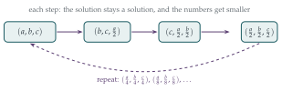

Suppose that there are three non-zero integers \(a\), \(b\) and \(c\) for which \(a^3 + 2b^3 + 4c^3 = 0\).
Explain why there must exist an integer \(p\), with \(|p| < |a|\), such that \(4p^3 + b^3 + 2c^3 = 0\), and show further that there must exist integers \(p\), \(q\) and \(r\), with \(|p| < |a|\), \(|q| < |b|\) and \(|r| < |c|\), such that \(p^3 + 2q^3 + 4r^3 = 0\).
Deduce that no such integers \(a\), \(b\) and \(c\) can exist.
Prove that there are no non-zero integers \(a\), \(b\) and \(c\) for which \(9a^3 + 10b^3 + 6c^3 = 0\).
By considering the expression \((3n \pm 1)^2\), prove that, unless an integer is a multiple of three, its square is one more than a multiple of \(3\). Deduce that the sum of the squares of two integers can only be a multiple of three if each of the integers is a multiple of three.
Hence prove that there are no non-zero integers \(a\), \(b\) and \(c\) for which \(a^2 + b^2 = 3c^2\).
Prove that there are no non-zero integers \(a\), \(b\) and \(c\) for which \(a^2 + b^2 + c^2 = 4abc\).
The hook
How can you prove that an equation has no whole-number solutions? You can’t try every possibility; there are infinitely many. Pierre de Fermat, in the 1630s, found a way: show that any solution would produce another solution with smaller numbers, and then another, smaller still, and so on for ever. But positive whole numbers can’t keep getting smaller for ever. So there was never a solution in the first place.
Fermat called this the method of infinite descent, and he was very proud of it. It is the reverse side of the well-ordering principle from Section 1.3, and it is still one of the main tools for proving that equations have no solutions.
Before you start
All four parts have the same shape: assume a solution, shrink it, contradict. The question is how to shrink.
In part (i), look at \(a^3 + 2b^3 + 4c^3 = 0\). Two of the three terms are obviously even. What does that tell you about the third?
That is the kind of observation that starts every descent: some divisibility is forced on you.
Working it through
Stage 1 The first descent
Since \(a^3 = -2b^3 - 4c^3\), the number \(a^3\) is even, and so \(a\) is even (the cube of an odd number is odd). Write \(a = 2p\). Then \(|p| = |a|/2 < |a|\), and substituting, \[8p^3 + 2b^3 + 4c^3 = 0 \quad\Longrightarrow\quad 4p^3 + b^3 + 2c^3 = 0.\]
The new equation is \(4p^3 + b^3 + 2c^3 = 0\). It has the same coefficients, just rotated. Can you do the same trick again?
Now \(b^3 = -4p^3 - 2c^3\) is even, so \(b = 2q\) with \(|q| < |b|\), and dividing by \(2\) gives \(2p^3 + 4q^3 + c^3 = 0\). Once more, \(c\) must be even: \(c = 2r\) with \(|r| < |c|\), and dividing by \(2\), \[p^3 + 2q^3 + 4r^3 = 0.\] This is the original equation, with \(p\), \(q\), \(r\) in place of \(a\), \(b\), \(c\). Each is half the size, and none of them is zero, because halving a non-zero number can’t give zero.
Turn this into a proof that no non-zero solution exists. What, exactly, should you assume is the “smallest”?
Among all solutions in non-zero integers, choose one with \(|a|\) as small as possible. (The well-ordering principle lets us do this, if any solutions exist at all.) The argument above produces another non-zero solution with \(|p| < |a|\), contradicting minimality. So there are no non-zero solutions.■
An equivalent way to say it: from one solution we could build an infinite sequence of solutions with \(|a| > |p| > \cdots\), an infinite strictly decreasing sequence of positive integers, which is impossible.
Stage 2 A different prime
In \(9a^3 + 10b^3 + 6c^3 = 0\), parity doesn’t obviously help. Look at the coefficients \(9\), \(10\), \(6\). Which prime divides two of them?
The prime \(3\) divides \(9\) and \(6\), so \(3\) divides \(10b^3\), and hence \(3\) divides \(b\). Write \(b = 3q\) and divide by \(3\): \[3a^3 + 90q^3 + 2c^3 = 0.\] Now \(3\) divides \(2c^3\), so \(c = 3r\); dividing by \(3\) again gives \(a^3 + 30q^3 + 18r^3 = 0\). So \(3\) divides \(a\): \(a = 3p\), and dividing by \(3\) once more, \[9p^3 + 10q^3 + 6r^3 = 0.\] Exactly the original equation, with smaller non-zero numbers. By the same descent argument, there are no non-zero solutions.■
Stage 3 Squares modulo 3
Every integer is of the form \(3n\), \(3n+1\) or \(3n-1\). What are their squares, modulo \(3\)?
\((3n \pm 1)^2 = 9n^2 \pm 6n + 1 = 3(3n^2 \pm 2n) + 1\), one more than a multiple of \(3\). And \((3n)^2\) is a multiple of \(3\). So a square leaves remainder \(0\) or \(1\) on division by \(3\), never \(2\).
Now if \(a^2 + b^2\) is a multiple of \(3\), the possible remainders are \(0+0\), \(0+1\), \(1+0\) and \(1+1\), which give \(0\), \(1\), \(1\), \(2\). Only the first is a multiple of \(3\), so both \(a\) and \(b\) must be multiples of \(3\).
If \(a^2 + b^2 = 3c^2\) and \(a = 3p\), \(b = 3q\), what can you say about \(c\)?
We get \(9p^2 + 9q^2 = 3c^2\), so \(c^2 = 3(p^2 + q^2)\) is a multiple of \(3\), and hence \(c = 3r\). Then \(9p^2 + 9q^2 = 27r^2\), so \(p^2 + q^2 = 3r^2\): the same equation, smaller numbers. Descent again.■
Stage 4 A twist: the equation changes
In \(a^2 + b^2 + c^2 = 4abc\) the right-hand side is a multiple of \(4\). What are the squares modulo \(4\)?
Even squares are multiples of \(4\) and odd squares are one more than a multiple of \(4\) (\((2n+1)^2 = 4n^2 + 4n + 1\)). So \(a^2 + b^2 + c^2\) leaves remainder \(0\), \(1\), \(2\) or \(3\) on division by \(4\), according to how many of \(a\), \(b\), \(c\) are odd. Since the right-hand side is a multiple of \(4\), none of them can be odd. Write \(a = 2p\), \(b = 2q\), \(c = 2r\): \[4(p^2 + q^2 + r^2) = 32\,pqr \quad\Longrightarrow\quad p^2 + q^2 + r^2 = 8\,pqr.\]
This is not the same equation: the \(4\) has become an \(8\). Does the descent still work?
Here is the trick: prove something stronger. Consider all equations of the form \[x^2 + y^2 + z^2 = 2^m\, xyz \qquad\text{with } m \geq 2.\] For any such \(m\), the right-hand side is a multiple of \(4\), so exactly the same argument shows \(x\), \(y\), \(z\) are all even. Halving them gives a solution of the equation with \(2^{m+1}\), which is again of this form. So from a non-zero solution of the \(m\) equation we get a smaller non-zero solution of the \(m+1\) equation. Taking the solution, of any equation in the family, with \(|x|\) smallest gives a contradiction. In particular, \(a^2 + b^2 + c^2 = 4abc\) has no non-zero solutions.■
Sometimes the statement you want to prove is too weak to support its own induction, and the cure is to prove a more general statement that is self-supporting. This is a surprisingly common trick at university.

Looking back
Descent needs a source of divisibility. Each time, we found a prime \(p\) (here \(2\) or \(3\)) that was forced to divide all the variables, and divided it out.
Working modulo \(n\) is the way to find it. Looking at remainders mod \(2\), \(3\) or \(4\) turned “could anything work?” into a short finite check.
If the equation changes, generalise. Part (iv) needed a whole family of equations, closed under the descent step.
What’s really going on
Fermat used infinite descent to prove that \(x^4 + y^4 = z^2\) has no solutions in positive integers. This is the only case of his famous “Last Theorem” for which he left a proof, and it settles the case \(n = 4\) of \(x^n + y^n = z^n\). Euler later used descent, with a gap that was later filled, for \(n = 3\). Descent is still the starting point of the modern theory: the proof of the Mordell–Weil theorem about curves like the one in Section 1.9 is a sophisticated descent.
Local obstructions
Every proof in this section worked by looking at remainders modulo some number. If an equation has no solutions modulo \(n\) for some \(n\), or no solutions in real numbers, it certainly has no solutions in integers. Such reasons are called local obstructions, and at university you will meet the \(p\)-adic numbers, a way of studying all the remainders modulo \(p, p^2, p^3, \ldots\) at once.
A wonderful theorem of Hasse and Minkowski says that for quadratic equations like \(a^2 + b^2 = 3c^2\), local obstructions are the only obstructions: if there are no “local” reasons to fail, there really is a rational solution. For cubic equations this breaks down spectacularly. Ernst Selmer showed in 1951 that \[3x^3 + 4y^3 + 5z^3 = 0\] has solutions modulo every whole number, and in real numbers, but no solution in non-zero integers. Explaining when and why the “local-to-global” principle fails is a major theme of modern number theory.
An equation that does have solutions
Part (iv) has a famous cousin: \(x^2 + y^2 + z^2 = 3xyz\), the Markov equation. It has infinitely many solutions in positive integers, starting with \((1,1,1)\), \((1,1,2)\), \((1,2,5)\), \((1,5,13)\) and \((2,5,29)\), and they are connected to how well irrational numbers can be approximated by fractions. See exercise 4.
The thinking skill
To show an equation has no solutions, show that any solution would produce a strictly smaller one. Then the smallest solution can’t exist.
Pair this with working modulo \(n\) to find the divisibility that drives the descent, and be ready to generalise the statement if it isn’t preserved by the descent step.
Try this next
A STEP I warm-up. (STEP I 2010 Question 8.) Show that the only integer solution of \(a^3 + 3b^3 = 9c^3\) is \(a = b = c = 0\). Then, by considering final digits, show the same for \(p^4 + 2q^4 = 5r^4\).
A modulus with no descent needed. Show that \(x^2 + y^2 = 4z + 3\) has no integer solutions at all, just by working modulo \(4\).
Rational points. Use part (iii) to show that there is no point with rational coordinates on the circle \(x^2 + y^2 = 3\). (Contrast this with \(x^2 + y^2 = 2\), which contains \((1,1)\).)
Markov triples. Show that if \((x, y, z)\) satisfies \(x^2 + y^2 + z^2 = 3xyz\), then so does \((x, y, 3xy - z)\). Starting from \((1,1,1)\), generate the triples listed above. (This “jumping” trick is the opposite of descent.)
Further reading
Harold Davenport, The Higher Arithmetic, Chapters 2 and 5.
Joseph Silverman, A Friendly Introduction to Number Theory (Pearson). Very readable; includes Fermat’s descent proof for \(x^4 + y^4 = z^2\).
Simon Singh, Fermat’s Last Theorem (Fourth Estate). The story, from Fermat’s margin to Wiles’s proof, for a general reader.